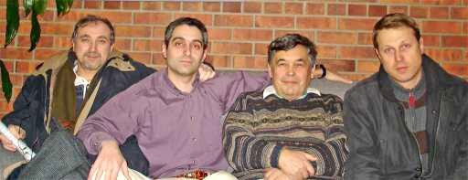
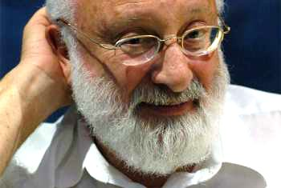

|
Каббала, встреча 24 января
2008 |
| Встреча с каббалистами была намечена за месяц вперед, и желающих поговорить и
сравнить наши взгляды было более чем достаточно. К намеченной дате число пытливых душ неуклонно уменьшалось и вечером 24 января остался я один на один с тремя энергичными молодцами из сторонников Михаила Лайтмана. |
|  |
| Еще в прошлом году (а может даже ранее) я на своем сайте открыл пункт меню
"каббала" и собрал там кое-какой материал. Так что к встрече я был готов. Кроме того,
непосредственно перед встречей, я еше добавил статьи. Лично для меня было ясно: то что объявляется тайной, объявляется "тайным знанием", на самом деле чистой воду шарлатанство, ибо Бог все тайное желает сделать явным для человека. "Настоящие каббалисты" сторонятся учения Михаила Лайтмана, потому что он объявляет себя атеистом, и то же время пользуется Торой и комментариями к ней. |
|  Михаил Лайтман, фото Максима Рейдера |
О Лайтмане я слышал от многих и он представлялся мне глубоким старцем и я был удивлен тем,
что ему только 61 год. Кроме того, некоторые "именитые" люди с восторгом онем отзываются, но я не буду здесь тиражировать их восторги, я их совершенно не разделяю, а скорее наоборот. От людей, которые встречались с Михаилом, я тоже не слышал ничего хорошего. Впрочем для меня это всегда не препятствие к добыче информации и, если возможно, то я стремлюсь к личному общению. |
| С каббалистами я начал говорить в 19ч. и до 20:15 . Разговор был интересный, но они все
говорили по тому что я уже читал, я им задавал вопросы, примерно такого
типа: 1. Дайте определение, что такое "каббала"? Ответ: это можно ответить одним предложением: Каббала это наука о причинно-следственных связях в духовном мире и его законах для поиска Творца. 2. Кто такой Творец или Бог? Ответ: Бог - это сила воздействующая на весь мир. 3. Ваша каббала до 16 века или после? Ответ: вопрос не корректный, ибо каббала идет от Адама, первая книга написана им. 4. Вы говорите что книга Зоар - это 19 томов, какое она имеет отношение к талмуду? Ответ: книга Зоар толкует Тору, потому что Тора имеет скрытое знание, которое не всем доступно и в этом смысле она подобна талмуду. 5. Вы говорите, что наука зашла в тупик, откуда у вас информация об этом? Ответ: это пишут ученые академики в разных газетах и журналах. Следущую науку, которую будет изучать человечество - это каббала! 6. Где вы получили образование и какое? Ответ: Владимир коммерческое в Израиле, кто-то музыкант, кто-то только ср.школа. 7. Кто для вас Иисус? Ответ: просто человек. Самый старший из них говорил, что он прошел путь от православия, через баптизм, пятидесятников, харизматов и иудаистов к каббале. В самом начале я попросил всех сфотографироваться и это было сделано. Они мне подарили видеодиск с проповедью Лайтмана , книжку и газету. Может быть я приготовлю отзыв на книгу, но теперь привожу мнение людей, живущих в Израиле и, следовательно, имеющих возможность личного знакомства. Николай П. |
|
http://rdavid.livejournal.com/67977.html
Уже несколько лет, как про Лайтмана говорить модно. Особенно болтовня про каббалу
распространена среди русскоговорящих студентов. То ли возраст такой, то ли проявляются
“русские” комплексы в Стране Победившего Иудаизма. В учении Лайтмана выполнение аллахических
предписаний не считается обязательным. И обращено оно ко всем людям, а не только к потомкам
нужной бабушки.
Среди зрелых людей я тоже замечал небывалый интерес к лайтманизму. Как правило, отношение резко критичное. Называют его жуликом и сектантом. Однако, удивительно то, что интерес к теме не ослабевает. И стоит произнести магическую фамилию, как возникает жаркий спор. Любопытно, что среди лайтманистов-каббалистов есть люди достаточно известные на “русской” улице. Например, актёр театра «Гешер» Саша Демидов. Или кинорежиссёр Семен Винокур. А также певец и композитор Аркадий Духин. При этом, Мадонну и Деми Мур Лайтман не считает настоящими каббалистами. Я не понимаю того, что говорит Михаил Лайтман. Я не понимаю того, что пытался мне объяснить один из его учеников. За паутиной слов я вижу желание навязать мне что-то странное и необъяснимое. Красная лампочка загорается у меня в голове, когда я вижу человека, знающего ответ на любой вопрос. В советском детстве я очень стеснялся популярного вопроса: “А веришь ли ты в Бога?” Помню, как на него отвечал мой двоюродный брат (Саша старше меня на полтора года): - В Бога я не верю. Я верю в природу! И тогда, и сейчас такой ответ мне казался невероятно глупым. Как же я удивился, когда то же самое услышал от Лайтмана. http://users.livejournal.com/_stern_b/ так вот Кабала и кабала-лайтмана - это разные вещи. он может и хороший человек, но все что он говорит - это не более чем его личные мысли и слова к Тайному учению не имеющие никакого отношения. http://rmoshe.livejournal.com/ У Лайтмана отличная техника манипуляции, баптисты просто отдыхают. Круче его разве сайентологи. http://rdavid.livejournal .com/67977.html?thread=949129#t949129 Рав Штейнзальц хорошо написал несколько лет назад про "каббала-лайт". А насчет промытости мозгов... верно, с лайтманистами разговаривать невозможно, они вместо своих мыслей вставляют целые куски из его книг и статей. "Разговор о Кабале" Адин Штейнзальц Цитата: На фоне развернувшихся в последние годы беспрецедентных попыток насаждения в России «Кабалы», нам представляется особенно важным сообщить читателю несколько непреложных фактов о мистическом течении в иудаизме. Кабала, интегральная часть иудаизма, не имеет ничего общего с теми невежественными и манипулятивными теориями, которые успешно продаются в России под видом «науки-Кабалы». И-м – М., 2003, 24 с. http://yulen-ka.livejournal.com/ с Лайтманом я училась когда-то в институте на одном потоке, так что неприятно говорить такое про однокашника, но... Кроме всего прочего, там еще хороший корыстный интерес. Например, он распространяет некое лекарство, которое "зашифровано" под его "каббалистическим воздействием", направлено на каждого человека по-своему, и "лечит" все на свете, включая рак. Находящиеся в безнадежном состоянии люди цепляются за соломинку, и готовы платить. При этом декларируется абсолютное бескорыстие для привлечения адептов: все уроки бесплатны, и т.п. http://rimmalove.livejournal.com/ Но я видела его учеников в Израиле. Они ему в рот смотрят, с горящими глазами. Может быть вы знаете, ГДЕ ГОВОРЯТ О НАСТОЯЩЕЙ КАБАЛЛЕ?( Об истиной). Всё это некоторым необходимо, как воздух . А куда им податься? Вот есть Лайтман. А кто ещё есть? Нету больше никого? |